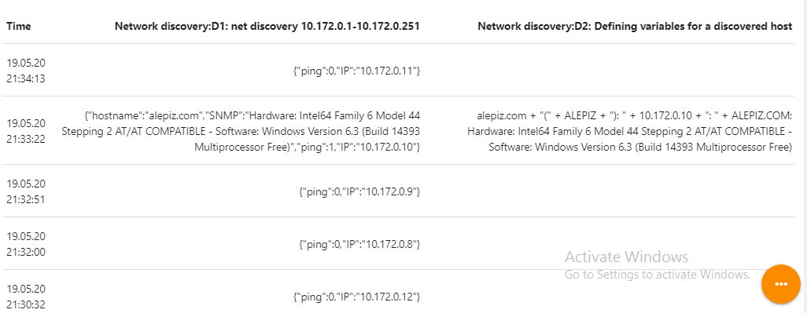
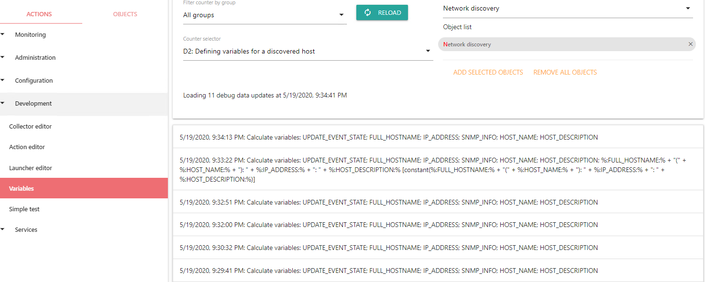
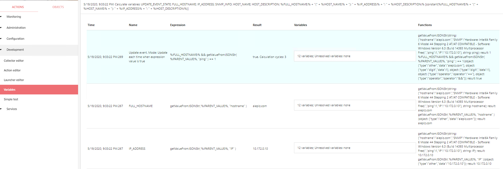
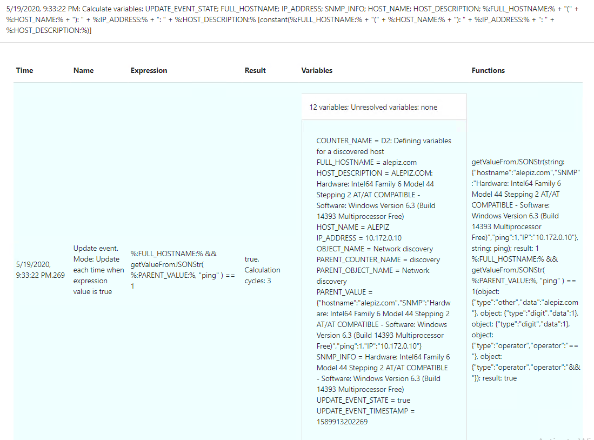
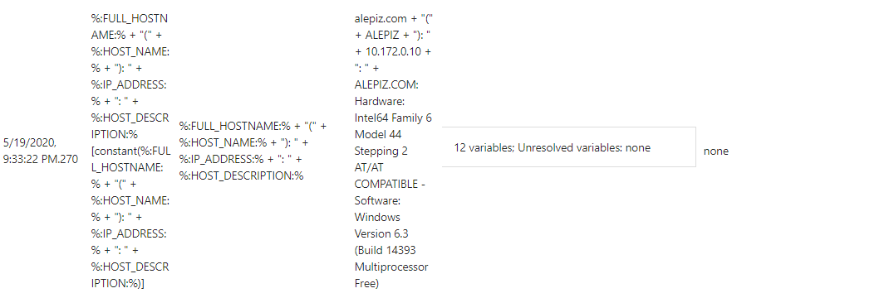
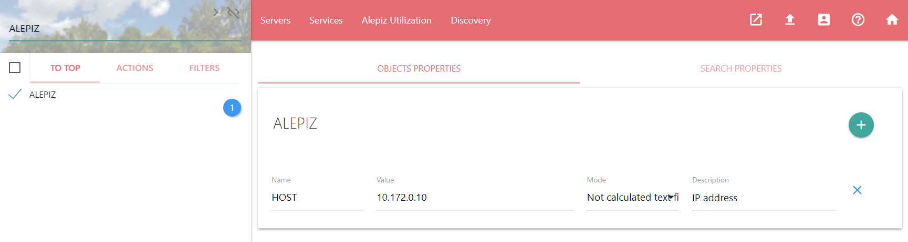

Подготовка: создание групп объектов
Создадим структуру объектов для того, чтобы в дальнейшем было удобно с ними работать. Для этого с помощью действия Configuration\Objects creator необходимо последовательно создать три вложенных друг в друга объекта с именами "System objects" => "Discovery" => "Network discovery", как на скриншотах ниже. Для увеличения скриншота можно нажать на него мышкой. Окно справки так же можно развернуть на весь экран, чтобы скриншоты были больше.
Создание счетчика для обнаружения хостов
Создание счетчика
Создаем первый счетчик, который будет искать хосты в диапазоне адресов 10.172.0.1-10.172.0.251. Для этого сначала необходимо выбрать действие Configuration\Counter settings, в нем создать группу Discovery для счетчиков этого типа, с помощью кнопки рядом с полем Counter group. Появится форма для создания группы, как на первом скриншоте.
После этого нужно заполнить остальные параметры счетчика, как на втором скриншоте и выполнить действие. Счетчик будет называться "D1: net discovery 10.172.0.1-10.172.0.251". Буква "D" в названии помогает определить его принадлежность к Discovery. Цифра "1" является так же информационной составляющей и показывает очередность вычисления счетчика в объекте, которая определяется зависимостями счетчиков друг от друга. В качестве сборщика будем использовать Objects discovery, который собирает информацию о хостах в сети. Опрашивать хосты будем всеми возможными для сборщика Objects discovery способами: с помощью Ping по ICMP, запросами имени хостов в DNS, опросом по протоколу SNMP и опросом Zabbix агента.
Просмотр собранных данных
После того, как ALEPIZ загрузит новые данные в кэш (не более 5 минут), он начнет собирать информацию о хостах. Посмотреть результат работы счетчика можно, выбрав действие Monitoring\Data browser, объект Network discovery и в Data browser - счетчик "D1: net discovery 10.172.0.1-10.172.0.251". В таблице под графиком появятся данные по опросу хостов в сети.
Разбор полученных данных и определение переменных
Создание счетчика для разбора данных
Создадим счетчик, зависимый от счетчика "D1: net discovery 10.172.0.1-10.172.0.251". Он будет производить разбор полученных при обнаружении данных. Счетчик не будет выполнять никаких действий и нужен только для вычислений. Поэтому в качестве сборщика для него установим "Constant", который ничего не возвращает. Если в дальнейшем потребуется создать счетчики для обнаружения хостов в других сетях, мы так же можем добавить зависимость от них для текущего счетчика. В результате, он будет концентрировать все данные по обнаружению хостов во всех сетях. Все последующие счетчики можно будет делать зависимыми от этого счетчика - концентратора. Назовем его "D2: Defining variables for a discovered host".
При обнаружении хоста счетчиком "D1: net discovery 10.172.0.1-10.172.0.251" мы получаем примерно такие данные:
{
"hostname":"alepiz.com",
"SNMP":"Hardware: Intel64 Family 6 Model 44 Stepping 2 AT/AT COMPATIBLE - Software: Windows Version 6.3 (Build 14393 Multiprocessor Free)",
"ping":1,
"IP":"10.172.0.10"
}Из них нам потребуется "hostname", "IP" и "SNMP". Создадим переменные:
- FULL_HOSTNAME = getValueFromJSONStr( %:PARENT_VALUE:%, "hostname" )
- IP_ADDRESS = getValueFromJSONStr( %:PARENT_VALUE:%, "IP" )
- SNMP_INFO = getValueFromJSONStr( %:PARENT_VALUE:%, "SNMP" )
- HOST_NAME = toUpperCase( replaceRE(%:FULL_HOSTNAME:%, "^([^\.]+)\..+$", "$1") )
- HOST_DESCRIPTION = toUpperCase(%:FULL_HOSTNAME:%) + ": " + ifElse( %:SNMP_INFO:%, %:SNMP_INFO:%, "SNMP not available" )
Первые три переменные FULL_HOSTNAME, IP_ADDRESS и SNMP_INFO вычисляются с помощью функции getValueFromJSONStr() Значением переменной PARENT_VALUE является результат, возвращаемый после выполнения родительского счетчика "D1: net discovery 10.172.0.1-10.172.0.251". Пример такого результата представлен выше. Второй аргумент функции - это ключ из объекта, для которого требуется извлечь данные.
Значение переменной HOST_NAME вычисляется из переменной FULL_HOSTNAME путем вырезания из имени хоста - домена (всех символов после первой точки в имени хоста) и перевода символов в верхний регистр. Например alepiz.com => ALEPIZ
Значение переменной HOST_DESCRIPTION создается из значения переменной FULL_HOSTNAME в верхнем регистре к которой добавляется строка ": " и, если хост откликнулся по протоколу SNMP, то строка с информацией, которую он передал. Если не откликнулся, то строка "SNMP not available". Например, "ALEPIZ.COM: Hardware: Intel64 Family 6 Model 44 Stepping 2 AT/AT COMPATIBLE - Software: Windows Version 6.3 (Build 14393 Multiprocessor Free)"
На вкладке Counter включим для этого счетчика признак "Enable debug", чтобы в дальнейшем иметь возможность посмотреть процесс вычисления переменных. В качестве параметра сборщика "This value will be returned by collector" установим строку %:FULL_HOSTNAME:% + "(" + %:HOST_NAME:% + "): " + %:IP_ADDRESS:% + ": " + %:HOST_DESCRIPTION:% по которой можно будет определить значения некоторых переменных. Так же установим параметры "Keep history" и "Keep trends" в 0 дней, чтобы данные по этому счетчику не занимали места и не записывались в базу с историческими значениями.
На вкладке Links установим зависимость от счетчика "D1: net discovery 10.172.0.1-10.172.0.251" и объекта "Network discovery" и в качестве условия для вычисления счетчика поставим наличие значения в переменной FULL_HOSTNAME и отклик хоста по протоколу ICMP (ping): "%:FULL_HOSTNAME:% && getValueFromJSONStr( %:PARENT_VALUE:%, "ping" ) == 1"
Пример заполнения полей действия Configuration\Counter settings для счетчика "D2: Defining variables for a discovered host" для вкладок Counters, Links и Variables:
Просмотр данных по счетчику
Просмотр полученных данных в действии Data browser
Примерно через 5 минут ALEPIZ начнет обрабатывать данные и вычислять переменные счетчика.
Сначала посмотрим данные через действие Monitoring\Data browser. Для этого выберем объект Network discovery, выберем действие Monitoring\Data browser и в действии выберем все доступные счетчики. В таблице с данными (под графиком) можно увидеть процесс обнаружения хостов:
Просмотр процесса вычисления переменных в действии Variables
Для просмотра процесса вычисления переменных, выберем объект Network discovery и запустим действие Development\Variables. В элементе Counter selector выбираем счетчик "D2: Defining variables for a discovered host":
Вторая строка содержит больше информации, чем все остальные. Это означает, что в этот момент система вычисляла большее количество переменных и произошло обнаружение нового хоста. Нажмем на эту строку для получения информации о вычислении переменных и получим следующую таблицу:
Бирюзовым цветом выделена строка с информацией о вычислении условия из Update event. Этот цвет означает, что условие было выполнено и произошло вычисление значения счетчика. Если нажать на строку "12 variables. Unresolved variables: none", можно увидеть значения всех переменных, вычисленных для счетчика. Так же можно увидеть, что вычисление условия "%:FULL_HOSTNAME:% && getValueFromJSONStr( %:PARENT_VALUE:%, "ping" ) == 1" в данном случае вернуло результат "true" и все вычисления были выполнены за 3 цикла.
В конце таблицы находится параметр сборщика - строка из переменных "%:FULL_HOSTNAME:% + "(" + %:HOST_NAME:% + "): " + %:IP_ADDRESS:% + ": " + %:HOST_DESCRIPTION:%". В четвертой колонке Result можно увидеть вычисленное значение:
Создание счетчика для выполнения задачи
Создадим счетчик, который автоматически будет выполнять задачу по созданию обнаруженных хостов. Для этого нам понадобится задача, созданная в уроке "#2 Создание задачи для автоматизации". Открываем действие Configuration\Task maker, выбираем группу "Discovery tasks" и смотрим идентификатор задачи. Он находится перед названием задачи, в нашем случае это #1.

С помощью действия Configuration\Counter setting создаем счетчик, который будет выполнять задачу по созданию объекта. Назовем его "D3: Create an object". В качестве сборщика выбираем "Task runner" и в параметре "Task ID" указываем идентификатор задачи, которую требуется запускать: "1".
Во вкладке Links нужно сделать зависимость от счетчика "D2: Defining variables for a discovered host" и объекта "Network discovery". В качестве условия для Update event установим проверку существования объекта: "!isObjectExist( %:HOST_NAME:% )". Перед функцией isObjectExist() стоит отрицание "!", то есть будем выполнять задачу только если такого хоста не существует. Все необходимые значения переменных мы получим из родительского счетчика.
После обновления данных в кэше в процессе обнаружения новых хостов в сети, будут создаваться объекты. Их можно будет посмотреть в объекте "Servers". Если запустить действие Configuration\Objects Properties для созданных объектов, можно увидеть, что свойство HOST имеет значение IP адреса объекта.
